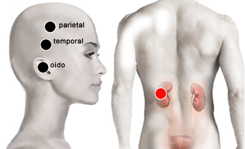

Goiz
Pares
parietal - riñón (contralateral)
temporal - riñón (contralateral)
oído - riñón (contralateral)

Generalidades:
Desequilibrio energético que afecta varios sistemas: Sistema nervioso central, sistema bronquio pulmonar, sistema renal; más aun, cuando hace resonancia con la glándula parótida o con la paratiroides, La mayoría de los cuadros de bronquitis asmática e inclusive de asma obedecen a este par biomagnético y la cronicidad de éstos cuadros.
En este caso al comenzar a revisar al paciente se encuentra un acortamiento de una de las piernas que no obedece a cuestiones mecánicas o anatómicas. Esto se corrige al poner el polo positivo del imán en el riñón. Se debe localizar el punto negativo (-) que le hace resonancia (oído, temporal o parietal) para impactar el par como cualquier otro y así equilibrar la energía.